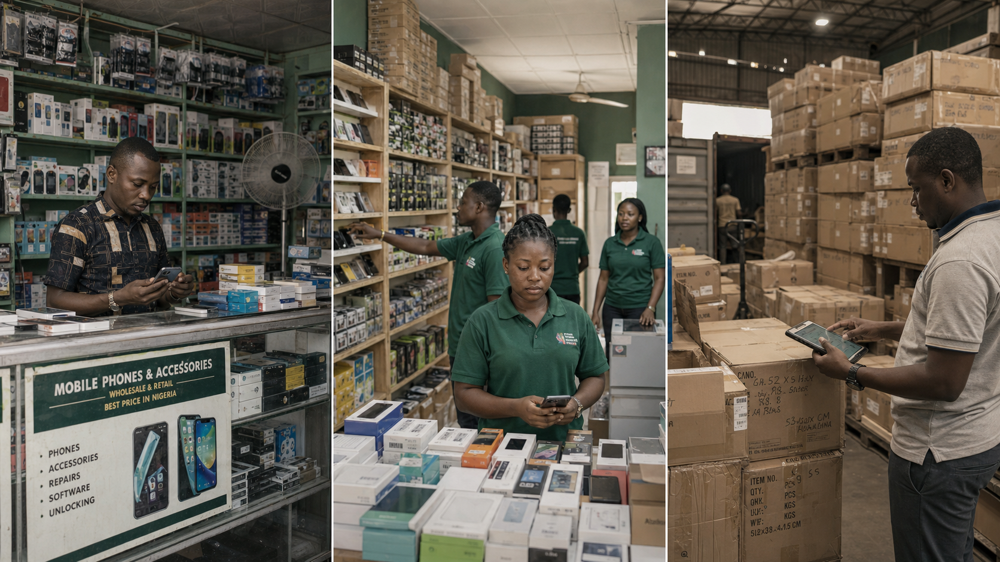

KiliMax 数字化非洲 SME 的真实经营活动；Fintech / 银行将经营数据转化为经营周转资金，共同探索可规模化的 SME 融资合作模式。
KiliMax 已经在非洲 SME 的真实经营场景中覆盖零售、批发、门店经营、库存、销售、采购和支付等日常流程。
面向零售商户、批发商、分销商、门店型商户、小型连锁门店，未来可扩展到美业、餐饮和本地服务。

只有经营过程被数字化，商户才有机会被金融机构识别、评估和持续服务。
商品卖得动，但现金不够补货；批发商有订单，但短期资金不足；旺季前需要备货；库存周转快，但现金回笼慢。
商户从 Bank / Fintech 的生态入口进入 KiliMax，经 SSO 低摩擦访问，订阅并使用 ERP / POS，在真实经营过程中沉淀数据。
基于 KiliMax 经营数据的小微商户经营周转资金，优先服务补货、采购、旺季备货、短期现金流和高周转商品采购。
KiliMax 的价值是提供证据链、状态机和可对账的经营闭环；金融机构负责资金与信用风险。
KiliMax digitizes African SME operations.
Fintech turns operating data into working capital.
Together, we build a scalable SME financing model for African markets.